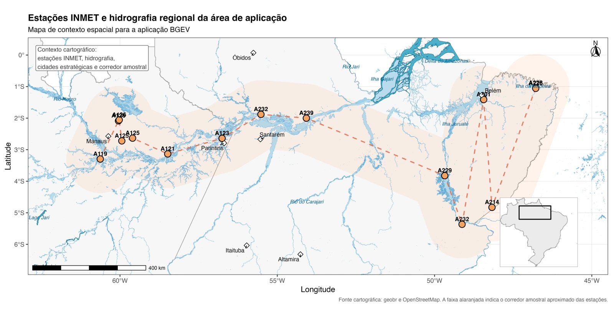
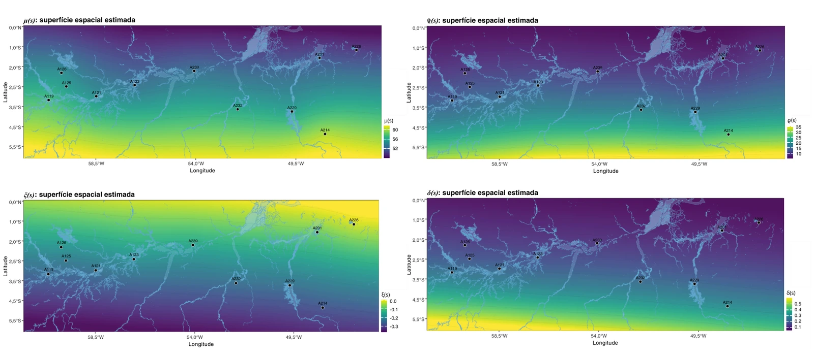

Statistical Modelling of Spatial Extremes in Complex Systems
A Bayesian hierarchical model for spatial extremes with Bimodal Generalized Extreme Value (BGEV) marginals. Gaussian spatial structures allow all four marginal parameters to vary across locations. Simulation experiments and quarterly humidity-deficit extremes in the Brazilian Amazon examine what the model can recover, and where its interpretation needs care.
Enzo Porto Brasil · University of Brasília (UnB) · 2026
The full dissertation is currently available upon request while related manuscripts are being prepared for publication.
01 / The question
When one regime is not enough
The conventional Generalized Extreme Value (GEV) distribution is a standard model for block extremes. However, in a complex system the observed marginal distribution may reflect more than one occurrence regime. A single unimodal shape can then leave part of that structure unresolved.
The dissertation asks how to accommodate this marginal flexibility and complexity while allowing extreme value behaviour to vary across space. The BGEV supplies a flexible local distribution; the hierarchy connects its parameters across locations.
02 / The model
Local extremes, shared spatial structure
At each location, a BGEV marginal describes the extremes through four parameters: μ, ϱ, ξ and δ. Spatial covariates and latent Gaussian effects enter their predictors. Transformations preserve the parameter constraints; spatial dependence is induced through these latent structures.
Marginal behaviourBGEV parameters describe local location, scale, tail behaviour and additional flexibility.
Spatial hierarchyGaussian latent effects and covariates allow the four parameters to vary by location.
Posterior inferenceHMC/NUTS in Stan estimates the hierarchy and its uncertainty from the observed extremes.
FIG. 01BGEV density and cumulative distribution for μ = 0, ϱ = 1 and ξ = 0, with δ = 0, 1 and 3. Varying δ changes the marginal shape. Dissertation, Figure 2.2.03 / Simulation
What the model is trying to recover
Controlled simulations make the true parameters available for comparison. The study evaluates local parameter recovery, errors and credible-interval coverage, alongside density and quantile recovery and MCMC diagnostics. The example below is a balanced scenario that considered 20 locations, with 200 extreme observations at each location.
FIG. 02True fields (top) and estimated fields (bottom) for the four BGEV parameters in scenario C3. Points mark the locations used in fitting; smooth regions between them are conditional spatial reconstructions. Dissertation, Figure 4.17.
The experiments recovered informative spatial patterns, but performance was not uniform across parameters and scenarios. Sampling was consistently more difficult for the location components μ(s), with weaker mixing in some fits. The visual agreement of surfaces therefore needs to be read alongside the computational diagnostics.
04 / Atmospheric application
From simulation to the Amazon
The application uses relative humidity from 11 automatic stations of Brazil’s National Institute of Meteorology (INMET). The source records span 2000–2026, with availability varying by station. Low humidity is expressed as a deficit and aggregated into quarterly maxima.

FIG. 03The station network defines the spatial support of the application. Dissertation, Figure 5.5.
From observations to spatial inference
The fitted model yields local posterior summaries for the BGEV parameters. Their representations on a regular grid describe spatial variation under the estimated Gaussian structures; the cartographic step does not refit the model or provide a separate full assessment of predictive uncertainty at unobserved sites.

FIG. 04Gridded representations of posterior parameter summaries, conditioned on the fitted model and the 11-station domain. Dissertation, Figure 5.9.
Return levels on the scale of humidity deficit
With four quarterly blocks per year, return periods of 2, 5 and 10 years correspond to 8, 20 and 40 blocks. The resulting levels summarize high quantiles of quarterly maximum humidity deficit, rather than a prediction of when a dry episode will occur.
FIG. 05Descriptive 2-, 5- and 10-year return-level surfaces for quarterly maximum relative-humidity deficit (%). These are model-based summaries over the observed domain, not operational climate forecasts. Dissertation, Figure 5.10.05 / Synthesis
What this work adds
A common hierarchy combines flexible BGEV marginals with spatial variation in all four parameters.
The simulation also reveals where the main difficulties arise, particularly in recovering and sampling the location components.
The Amazon application translates local posterior estimates into a descriptive account of humidity-deficit extremes and return levels.
Overall, the results support the proposed model as a promising framework for spatial extremes, with consistent behavior across the simulation study and an environmental and atmospheric application. Additional sensitivity checks were also carried out during model development as part of the calibration process, although these analyses are not presented in detail in the dissertation. The computational diagnostics helped identify specific components, particularly those associated with μ(s), where further refinement may improve sampling efficiency. Extending the framework to fully Bayesian prediction at unobserved locations is a natural next step that could further broaden its spatial applicability.